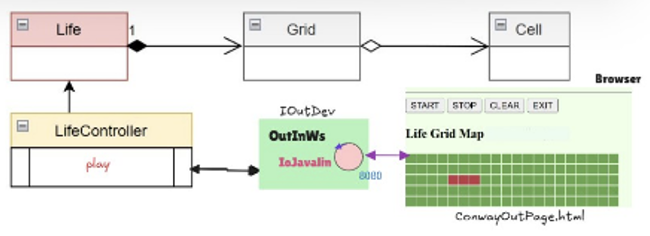

GIT repo: https://github.com/alequaranta/iss2026quaranta
GIT repo: https://github.com/alequaranta/iss2026quaranta
- Realizzare una GUI HTML per il gioco Conway Game of Life. - 1. Chi comanda?. Nel caso di più utenti, questi potranno vedere la stessa griglia o ognuno vedrà la sua griglia? • il committente precisa che tutti gli utenti potranno vedere la evoluzione della stessa griglia, ma solo uno potrà inviare comandi di gestione del gioco. Questo utente privilegiato (detto owner) sarà l’utente che ha aperto per primo la pagina HTML. 2. Chi crea la GUI? Si modifica il Progetto ConwayLife26 o è meglio lasciare il più possibile inalterato questo software già testato? • meglio modificare meno possibile ciò che già funziona. Il Progetto ConwayLife26 è stato impostato in modo da essere estendibile senza dover modificare la logica del gioco. In particolare, la parte di output della GUI potrebbe essere aggiornata introducendo una nuova classe che implementa la IOutDev interface in modo da visualizzare lo stato delle celle nella pagina HTML. • vi sono framework che permettono di realizzare pagine HTML che interagiscono con un server senza dover modificare il software già realizzato in Java. 3. Come si aggiorna? La pagina HTML deve essere aggiornata in modo automatico o l’utente deve premere un pulsante per vedere lo stato delle celle? • la pagina HTML deve essere aggiornata in modo automatico (per tutti gli utenti connessi) durante la evoluzione del gioco, senza che un utente debba fare nulla. Questo richiede l’uso di WebSocket che per- mettono di inviare messaggi dal server alla pagina HTML.
- Una GUI HTML comporta l'introduzione di un Framework (Server) in grado di erogare pagine Web. Viene scelto Javalin in quanto non impone architettura, layer, dependency injection o pattern specifici. - Il primo Utente a connettersi al servizio erogato sarà considerato "Owner" della partita. - La versione distribuita (file .jar) dello Sprint1 è stata generata escludendo le librerie esterne. Sarà utilizzata come libreria nel progetto dello Sprint 3. - L'appplicativo verrà eseguito direttamente dal componente Server Javalin
Creremo una classe WebOutDev che implementi il contratto imposto da IOutDev per la gestione della visualizzazione della GUI
GIT repo: https://github.com/alequaranta/iss2026quaranta